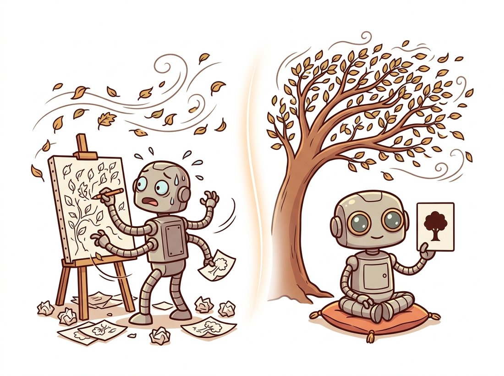

"Everyone kept asking me to predict the exact dance of every leaf in the wind. I refused. I predict that the tree will still be a tree. It turns out that is the part worth knowing, and the leaves were never the point."
A Predictor That Declined to Render Pixels
The generative simulators of the previous sections predict the future in pixel space, which forces them to model irrelevant detail; the Joint-Embedding Predictive Architecture (JEPA) takes the contrarian path of predicting the future in representation space and throwing the pixel decoder away entirely. By predicting abstract features rather than exact pixels, JEPA spends its capacity on what is predictable and structural, and ignores the noise it could never get right anyway. This section presents the JEPA objective, why it avoids the trap that plagues generative prediction, and V-JEPA for video. The illustration below captures the wager: do not exhaust yourself drawing every leaf, predict that the tree will still be a tree.

Sections 36.5 and 36.6 built world models that predict observations: latent frames decoded to pixels (RSSM) or pixels directly (GAIA-1, GameNGen). Yann LeCun's influential critique, realized in the JEPA family, is that pixel-space prediction is the wrong objective. The future is full of detail that is genuinely unpredictable (the exact texture of every leaf, the precise speckle of noise) and irrelevant to understanding. A model trained to predict every pixel wastes enormous capacity trying to render that detail and is penalized for failing at something no model could do. JEPA proposes to predict in the abstract representation space instead, where the unpredictable detail has already been discarded.
1. The JEPA Objective: Predict Features, Not Pixels Advanced
JEPA descends directly from the self-supervised learning of Chapter 25, specifically the masked-prediction lineage of MAE and the joint-embedding lineage of DINO and contrastive methods. The cross-reference map names this arc precisely: self-supervision (DINO, MAE, contrastive) deepened into foundation models, transformed here into decoder-free prediction. The architecture has three parts. A context encoder $f_\theta$ embeds an observed (context) part of the input. A target encoder $f_{\bar\theta}$ embeds the part to be predicted (the future, or a masked region). A predictor $g_\phi$ tries to map the context embedding to the target embedding. The loss is computed entirely in embedding space:
$$ \mathcal{L}_{\text{JEPA}} \;=\; \big\lVert\, g_\phi\!\big(f_\theta(x_{\text{context}}),\, m\big) \;-\; \operatorname{sg}\!\big[f_{\bar\theta}(x_{\text{target}})\big] \,\big\rVert_2^2, $$
where $m$ encodes which target is being predicted (its position or the masking pattern) and $\operatorname{sg}[\cdot]$ is the stop-gradient: an operation that passes a value forward unchanged but blocks gradients from flowing back through it during training (PyTorch's .detach()), so the target embedding acts as a fixed label the predictor chases rather than a quantity the optimizer can move to meet the prediction halfway. The target encoder $f_{\bar\theta}$ is not trained by backpropagation; its weights are an exponential moving average (EMA) of the context encoder's, the same teacher-student trick that stabilizes DINO. Critically, there is no decoder and no pixel-reconstruction term anywhere: the model never renders an image.
Figure 36.7.1 makes the absence conspicuous: nowhere does an image come out. The code below implements the JEPA training step, and the comments mark the two design choices, embedding-space loss and the EMA target, that distinguish it from a generative predictor.
# The JEPA training step: predict the TARGET EMBEDDING from the context embedding
# with an L2-style loss in feature space, no pixel decoder. A stop-gradient EMA
# target encoder is what stops both encoders collapsing to a constant vector.
import torch
import torch.nn.functional as F
import copy
class JEPA(torch.nn.Module):
"""Joint-Embedding Predictive Architecture: predict target embeddings from
context embeddings, with no pixel decoder."""
def __init__(self, encoder, predictor, ema_decay=0.996):
super().__init__()
self.context_encoder = encoder
self.predictor = predictor
self.target_encoder = copy.deepcopy(encoder) # EMA teacher, not trained by grad
for p in self.target_encoder.parameters():
p.requires_grad_(False)
self.ema_decay = ema_decay
@torch.no_grad()
def update_target(self):
# target encoder follows the context encoder slowly (prevents collapse)
for tp, cp in zip(self.target_encoder.parameters(),
self.context_encoder.parameters()):
tp.data.mul_(self.ema_decay).add_(cp.data, alpha=1 - self.ema_decay)
def forward(self, x_context, x_target, mask_tokens):
ctx = self.context_encoder(x_context) # embed observed part
with torch.no_grad():
tgt = self.target_encoder(x_target) # embed target part (EMA)
pred = self.predictor(ctx, mask_tokens) # predict target embedding
# loss lives entirely in embedding space; pixels never appear
return F.smooth_l1_loss(pred, tgt.detach())
# Each step: compute loss, backprop into context_encoder + predictor only,
# then model.update_target(). The stop-gradient + EMA teacher prevent the
# trivial collapse where both encoders output a constant.smooth_l1_loss between the predicted and target embeddings, the target_encoder is a stop-gradient EMA of the context_encoder updated by update_target, and no decoder or pixel loss appears anywhere. The EMA teacher and the tgt.detach() stop-gradient are what prevent representational collapse to a constant.The deep reason JEPA works is that prediction error in pixel space is dominated by detail that is irreducibly uncertain and uninformative. If you ask a model to predict the next video frame exactly, most of its loss comes from getting the precise pixel values of textures, reflections, and fine motion wrong, things no model can predict and that do not matter for understanding the scene. JEPA predicts in a learned representation where those details have been abstracted away, so the loss reflects only predictable, semantic structure: that the object is still there, roughly where physics says it should be. This is why JEPA representations transfer so well to downstream tasks while a pixel-predicting generative model can ace photorealism yet learn shallow dynamics. The decoder you remove is the capacity you save for understanding.
2. The Collapse Problem and Why EMA Saves It Intermediate
Predicting in embedding space has a built-in danger you do not face in pixel space: representational collapse. If both encoders are free to learn, the easiest way to make the prediction loss zero is for both to output the same constant vector for every input, a perfect but useless solution. Generative models avoid this automatically because the pixel target is fixed ground truth; JEPA's target is itself learned, so it can cheat. The fix, inherited from the self-supervised methods of Chapter 25, is the asymmetry between the two encoders: the target encoder is a stop-gradient EMA of the context encoder, so it cannot collude, plus architectural asymmetries (the predictor, masking) that make the constant solution unreachable. Understanding collapse and its prevention is the single most important practical fact about training any joint-embedding predictive model.
Ask a JEPA to "predict the embedding" and let both encoders cheat, and it discovers the laziest answer in machine learning: map every image, every video, every frame of every leaf in the wind, to the number 7. The prediction loss is now a flawless zero, and the model has learned absolutely nothing. The stop-gradient EMA teacher is the chaperone who refuses to agree on "7" in advance, which is the entire reason JEPA training does not curl up and die. Half of self-supervised learning is inventing clever ways to forbid the constant function.
3. V-JEPA: Prediction in Video Intermediate
V-JEPA (Bardes et al., 2024) applies the architecture to video and is the most direct predictive-world-model member of the family. It masks large spatiotemporal regions of a video and trains the model to predict the representations of the masked regions from the visible context, never reconstructing pixels. The learned features are strong: V-JEPA transfers well to action recognition and other video understanding tasks (the domain of Chapter 26) with frozen features. Its successor V-JEPA 2 (Assran et al., 2025; arXiv:2506.09985) scales pretraining to over a million hours of video and adds an action-conditioned variant, V-JEPA 2-AC, post-trained on a small set of unlabeled robot videos and used for zero-shot planning toward image goals, the follow-up work that positions the family as the perception-and-prediction core of an agent that plans in representation space rather than by rendering imagined video. The contrast with Section 36.6 is stark and deliberate: GAIA-1 renders the future you can watch; V-JEPA predicts the future you can reason about but never see.
Training a JEPA from scratch needs large-scale video data and careful collapse-prevention tuning. The released V-JEPA checkpoints give you the learned predictor and encoder directly:
# Use pretrained V-JEPA video features instead of training a JEPA from scratch:
# load the released encoder, and a forward pass yields transfer-ready
# representations with no pixels and no collapse-prevention tuning.
import torch
# Load a pretrained V-JEPA video encoder from the released checkpoints.
# (The facebookresearch/jepa repo ships the loader and the ViT weights;
# follow its README for the exact entrypoint, which evolves across releases.)
encoder = load_vjepa_encoder("vit_large") # released weights + loader from the repo
encoder.eval()
with torch.no_grad():
feats = encoder(video_clip) # (B, num_tokens, dim) representation, no pixels out
# Attach a small linear head for action recognition or use feats for planning.feats are transfer-ready representations (no pixels out), the decoder-free analogue of loading a pretrained ResNet and the runnable counterpart to the from-scratch JEPA of Code Fragment 1.This replaces the entire context encoder, EMA target encoder, predictor, masking pipeline, and the collapse-avoidance training loop, a substantial research codebase, with one load call that returns transfer-ready video representations, the decoder-free analogue of loading a pretrained ResNet.
4. Two Philosophies, One Question Beginner
The chapter now holds two competing answers to "what is a world model?" The generative answer (Sections 36.5, 36.6): a model that can render the future, prized for interactivity, scenario generation, and the fact that humans and downstream pixel-consumers can directly use its output. The predictive answer (this section): a model that predicts abstract future state without rendering it, prized for efficiency, robustness, and the quality of the representations it learns for planning and understanding. They are not strictly opposed, hybrid systems use a JEPA-style predictive core with an optional decoder for visualization, but they embody a real disagreement about where to spend capacity.
The phrase "decoder-free" invites the reading that JEPA is the autoencoder of Chapter 31 with the decoder deleted, so that you could bolt a decoder back on and sample images from it. That is not what JEPA is. It never models the data distribution and has no mechanism to draw samples; its loss is an L2 distance between learned embeddings, not a likelihood or a denoising objective, so there is nothing to sample from. JEPA is a representation learner and a predictor of abstract state, not a generator that happens to skip rendering. The practical consequence: do not evaluate it with FID or FVD (it produces no pixels to compare), and do not expect it to fill in or hallucinate missing video. You probe its predicted representations for the properties of Section 36.8, which is exactly why that section can score a model that shows you nothing.
The disagreement cannot be settled by appearance, because the predictive model produces no appearance to judge. It can only be settled by measuring what a world model is actually for: does it predict consequences correctly, does it obey physics, does it respond to actions coherently, does it stay coherent over long horizons? Those measurements are not photorealism, and standard generative metrics do not capture them. Building the evaluations that can adjudicate between a beautiful generative simulator and an invisible but accurate predictive one is the task of the final section, Section 36.8.
JEPA is the centerpiece of an explicit research program (LeCun's "path toward autonomous machine intelligence") arguing that predictive, energy-based, decoder-free models are the route to agents that plan. The 2024 to 2026 frontier is filling it in: I-JEPA (Assran et al., 2023) established image features that rival contrastive and masked-autoencoder methods without augmentation engineering; V-JEPA and V-JEPA 2 (2025) extend this to video and to action-conditioned prediction with zero-shot robot planning, the predictive counterpart of the action conditioning in Section 36.6; and a growing body of robotics work plans directly in JEPA latent space. The open debates are sharp and unresolved: can a decoder-free model match the data efficiency and physical fidelity of large generative video models, can it be made action-conditioned and long-horizon without quietly reintroducing a decoder, and is abstraction or rendering the better substrate for planning? This is one of the genuine forks in the road of the field, and which branch wins is, as of this writing, undecided.
Conceptual. Explain why a pixel-reconstruction objective (like the generative world models of Section 36.5) and a JEPA embedding-prediction objective allocate model capacity differently, and give a concrete example of detail that a pixel model is forced to learn but a JEPA model is free to ignore. Then explain why JEPA needs an EMA target encoder and stop-gradient, while a pixel-reconstruction model does not.
Coding. Take the JEPA class and deliberately break collapse prevention: replace the EMA target encoder with the context encoder itself (sharing weights, no stop-gradient). Train on any small dataset and monitor the variance of the output embeddings across a batch. Show that the variance collapses toward zero (constant output) and that restoring the EMA target encoder keeps the variance healthy. Explain what you observed in terms of the trivial solution.
Analysis. A robot must plan 50 candidate action sequences of 20 steps each to pick the best grasp. Estimate the relative cost of evaluating these plans with (a) a generative world model that renders a future video per candidate versus (b) a JEPA that predicts a goal-distance in embedding space per candidate. Beyond speed, argue which approach is more robust to visually distracting but task-irrelevant scene changes (a moving shadow, a reflection) and why.
5. JEPA as an Energy-Based Model: LeCun's Position Advanced
The previous sections presented JEPA mechanically, as an encoder-predictor trained with an L2 loss in feature space. But where does the idea come from, and why was it proposed as something more ambitious than another self-supervised pretext task? The answer is a 2022 position paper by Yann LeCun, "A Path Towards Autonomous Machine Intelligence," posted on OpenReview as an argument rather than a peer-reviewed result. Its claim is that the dominant generative recipe (predict the data, in pixel or token space, by maximizing likelihood) is the wrong scaffold for building agents that understand and plan. The proposed replacement is an energy-based model (EBM) whose energy is exactly the prediction error in an abstract representation space.
The energy-based framing is worth taking seriously because it reframes what the model is for. An EBM does not output a probability or a sample; it assigns a scalar energy $E(x, y)$ to a pair, low energy for compatible pairs and high energy for incompatible ones. JEPA instantiates this with the energy being the distance between the predicted and observed representations:
where $x$ is the context, $y$ the target, $E_\theta$ the online (context) encoder, $\bar E$ the stop-gradient EMA target encoder, $P_\phi$ the predictor, and $z$ a latent that captures the part of $y$ that the context genuinely cannot determine (the residual uncertainty). The energy is low when the context, after encoding and prediction, explains the target's representation, and the minimization over $z$ lets the model account for legitimately unpredictable variation without paying for it in the loss. Crucially, this energy is a function of the dependency between $x$ and $y$, and it never requires generating $y$ in pixel space. The hierarchical extension, H-JEPA, stacks these predictors so that higher levels predict over longer horizons in coarser, more abstract representations, which is the architecture LeCun argues an agent needs to plan at multiple timescales.
LeCun's "A Path Towards Autonomous Machine Intelligence" (2022) is a position paper hosted on OpenReview; it was not peer-reviewed and reports no experiments. It sets the research agenda (energy-based, decoder-free, hierarchical prediction) that the I-JEPA, V-JEPA, and V-JEPA 2 papers then test empirically. Read it as a manifesto whose claims the later papers turn into measurements, not as evidence on its own.
6. I-JEPA: The Objective Made Concrete Advanced
A manifesto needs a working demonstration, and I-JEPA (Assran et al., 2023, "Self-Supervised Learning from Images with a Joint-Embedding Predictive Architecture," arXiv:2301.08243) is the first one for images. The problem it solves is specific. Masked autoencoders (MAE, Chapter 25) reconstruct masked pixels, so they spend capacity on low-level detail; contrastive methods (SimCLR, MoCo) need carefully hand-engineered augmentations (crops, color jitter) to define what counts as the same image. I-JEPA discards both. It predicts the representations of several target blocks from a single context block, in latent space, with no pixel decoder and no hand-crafted augmentations. The masking does the work that augmentation did: a large, informative context block must predict several spatially distant target blocks, a task hard enough to force semantic features rather than texture shortcuts.
Concretely, sample a context block from the image and $M$ target blocks. Encode the context with the online encoder $E_\theta$, encode the full image with the EMA target encoder $\bar E$ and read off the representations $s_{y_i}$ of each target block, then predict each target representation with the predictor $P_\phi$ conditioned on positional mask tokens $z_i$. The loss is the average squared $L2$ distance over the masked target blocks:
Every term has a concrete reading. $P_\phi(E_\theta(x), z_i)$ is the predictor's guess for the $i$-th target block's representation, made from the context embedding and the positional token $z_i$ that says which block to predict. $\operatorname{sg}[\bar E(y_i)]$ is the EMA target encoder's representation of that block, frozen as a label by the stop-gradient. The $\tfrac{1}{M}\sum_i$ averages the error over the several target blocks, which is the multi-block structure that keeps the representation from degenerating. The payoff is efficiency as much as quality: I-JEPA trains a ViT-H/14 in under 72 hours on 16 A100 GPUs, and its frozen features rival contrastive and masked-autoencoder methods without any augmentation engineering.
Given an image $x_{\text{img}}$, the online encoder $E_\theta$, the EMA target encoder $\bar E$, the predictor $P_\phi$, and EMA rate $\tau$:
- Sample one context block and $M$ target blocks (large, possibly overlapping spatial regions) from $x_{\text{img}}$; record each target block's position as a mask token $z_i$.
- Encode the context: $h_x = E_\theta(x_{\text{context}})$, with gradients enabled.
- Encode the targets with the EMA encoder under no-grad: $s_{y_i} = \operatorname{sg}\big[\bar E(x_{\text{img}})\big]_{\text{block } i}$ for $i = 1, \dots, M$.
- Predict each target representation: $\hat s_{y_i} = P_\phi(h_x, z_i)$.
- Compute the loss $\mathcal{L} = \tfrac{1}{M}\sum_i \lVert \hat s_{y_i} - s_{y_i}\rVert_2^2$ and backpropagate into $E_\theta$ and $P_\phi$ only (never into $\bar E$).
- EMA update the target encoder: $\bar\theta \leftarrow \tau\,\bar\theta + (1-\tau)\,\theta$. This step, not the loss, is what trains the target encoder, and it is what makes the constant solution unreachable.
The code below condenses the loss and the EMA update to their essentials, the two lines that carry the whole anti-collapse argument. It is the same skeleton as Code Fragment 1 written at the level of a single step, with the stop-gradient made explicit via .detach() and the EMA update written out.
# I-JEPA loss + EMA target update, the two ideas that prevent collapse.
# online_enc, predictor are trained by grad; target_enc is an EMA copy (no grad).
import torch
import torch.nn.functional as F
def ijepa_step(x_img, context_block, target_blocks, mask_tokens,
online_enc, target_enc, predictor, tau=0.996):
h_ctx = online_enc(context_block) # context embedding (grad ON)
with torch.no_grad(): # target branch: no gradients
s_tgt = target_enc(x_img) # EMA encoder over full image
s_tgt = [s_tgt[b] for b in target_blocks] # read off target-block reps
loss = 0.0
for s_i, z_i in zip(s_tgt, mask_tokens):
s_hat = predictor(h_ctx, z_i) # predict target representation
loss = loss + F.mse_loss(s_hat, s_i.detach()) # stop-gradient on the target
loss = loss / len(target_blocks) # average over M target blocks
loss.backward() # grads flow ONLY to online_enc + predictor
# EMA update: target encoder slowly tracks the online encoder. This, not the
# loss, is what "trains" target_enc, and it forbids the lazy constant solution.
with torch.no_grad():
for tp, op in zip(target_enc.parameters(), online_enc.parameters()):
tp.mul_(tau).add_(op, alpha=1 - tau)
return loss
s_i.detach() is the stop-gradient that turns the target representation into a fixed label, and the final EMA loop is what advances the target encoder; together they make the trivial constant solution unreachable. V-JEPA swaps the mse_loss for an L1 (smooth_l1) loss and samples spatiotemporal rather than spatial blocks; nothing else changes.7. From Images to Video to Action: V-JEPA and V-JEPA 2 Advanced
Images establish the objective; video is where a predictive world model earns its name, because video is where the future, dynamics, and consequences actually live. V-JEPA (Bardes et al., 2024, "Revisiting Feature Prediction for Learning Visual Representations from Video," arXiv:2404.08471) carries the I-JEPA recipe to video with one principled change: feature prediction over masked spatiotemporal regions, with an L1 loss in place of the L2 used for images, an EMA target encoder, and no negatives, no text, and no decoder. The result is a pure feature-prediction model, and its frozen-feature numbers are strong precisely because the features are about predictable structure: 81.9% on Kinetics-400 and 72.2% on Something-Something-v2 (two action-recognition benchmarks of Chapter 26), and 77.9% on ImageNet-1K despite never being trained on a single still-image classification label. That a video feature-predictor transfers to image classification is the clearest evidence that it learned semantics, not motion texture.
V-JEPA 2 (Assran et al., 2025, "V-JEPA 2: Self-Supervised Video Models Enable Understanding, Prediction and Planning," arXiv:2506.09985) is the step that closes the loop from perception to control, the loop LeCun's position paper drew but could not yet walk. It scales action-free pretraining to over one million hours of video, learning a world model from passive observation alone, with no actions and no rewards. Then, in a separate post-training stage, V-JEPA 2-AC (action-conditioned) is trained on under 62 hours of unlabeled robot video from the DROID dataset to predict how the latent state evolves given an action. With that latent action-conditioned model, the robot plans by searching over action sequences entirely in representation space and picking the sequence whose predicted latent reaches the goal, achieving zero-shot pick-and-place on a real robot without task-specific reward engineering. The model never renders a single frame of the future it is planning over.
This is the concrete realization of the contrast that opened the section, and it connects directly to the decoder-free control of Section 36.5. TD-MPC2 there plans in a learned latent without a pixel decoder, optimizing a latent reward; V-JEPA 2-AC plans in a learned latent without a pixel decoder, optimizing latent goal-distance. Both refuse to render the imagined rollouts they evaluate, for the same reason: rendering would spend the agent's planning budget on pixels no controller reads. The generative simulators of Section 36.6 render every candidate future; the predictive-embedding models of this section and the latent planner of 36.5 predict the part of the future a decision actually depends on, and discard the rest.
A generative world model (Section 36.6) and a predictive-embedding world model can share an encoder and even a latent dynamics model; the single design choice that separates them is whether a decoder is trained alongside. Keep the decoder and you can watch the future, at the cost of a loss dominated by pixel detail no agent consumes. Drop the decoder, as JEPA and TD-MPC2 do, and every gradient goes into predicting the structure a controller or a classifier actually reads. The decoder is not a neutral add-on for visualization; it is a claim about where the model should spend its capacity, and JEPA's wager is that for understanding and planning, that claim is wrong.
Conceptual. Exercise 36.7.4: Walk through why the stop-gradient EMA target encoder prevents the constant-vector collapse. Start from the loss $\tfrac{1}{M}\sum_i \lVert P_\phi(E_\theta(x), z_i) - \operatorname{sg}[\bar E(y_i)]\rVert_2^2$ and explain what would happen if the target encoder were trained by this loss with no stop-gradient (where does the gradient push both encoders?). Then explain why making the target encoder an EMA of the online encoder, updated only by $\bar\theta \leftarrow \tau\bar\theta + (1-\tau)\theta$, removes that incentive while still letting the target track useful representations.
Analysis. Exercise 36.7.5: Compare three self-supervised objectives on the same axes: I-JEPA (predict target representations in latent space), MAE (reconstruct masked pixels), and a contrastive method such as SimCLR (pull augmented views together, push negatives apart). For each, state (a) what space the loss is computed in, (b) what mechanism prevents trivial solutions (collapse for JEPA, none needed for MAE, negatives for contrastive), and (c) what kind of detail the objective forces the model to spend capacity on. Conclude with one scenario where each would be the preferred choice.
Discussion. Exercise 36.7.6: An agent must choose between a generative world model that renders candidate futures (Section 36.6) and a decoder-free predictive world model that scores candidates in latent space (V-JEPA 2-AC, TD-MPC2). Argue when the decoder-free model is preferable. Consider planning compute over many candidate action sequences, robustness to task-irrelevant visual distractors (shadows, reflections), the cost of curating labeled or action-annotated data, and the cases where a human or a downstream pixel-consumer genuinely needs to see the predicted future. State explicitly when you would keep the decoder despite its cost.
Bibliography & Further Reading Advanced
LeCun, Y. "A Path Towards Autonomous Machine Intelligence." OpenReview position paper (2022), version 0.9.2. openreview.net/forum?id=BZ5a1r-kVsf
Position paper, not peer-reviewed, no experiments. Proposes JEPA and the hierarchical H-JEPA as energy-based models whose energy is prediction error in an abstract representation space, predicting the dependency between $x$ and $y$ without generating $y$ in pixel space. The manifesto that sets the agenda the I-JEPA, V-JEPA, and V-JEPA 2 papers then test.
Assran, M. et al. "Self-Supervised Learning from Images with a Joint-Embedding Predictive Architecture (I-JEPA)." CVPR (2023). arXiv:2301.08243
The first working JEPA: predict the representations of several target blocks from one context block, in latent space, with no pixel decoder and no hand-crafted augmentations. Trains a ViT-H/14 in under 72 hours on 16 A100s, with frozen features rivaling contrastive and masked-autoencoder methods.
Bardes, A. et al. "Revisiting Feature Prediction for Learning Visual Representations from Video (V-JEPA)." (2024). arXiv:2404.08471
Feature prediction on video with an EMA target encoder and an L1 loss, no negatives, no text, and no decoder. Frozen-feature results of 81.9% on Kinetics-400, 72.2% on Something-Something-v2, and 77.9% on ImageNet-1K demonstrate that a video feature-predictor learns transferable semantics.
Assran, M. et al. "V-JEPA 2: Self-Supervised Video Models Enable Understanding, Prediction and Planning." (2025). arXiv:2506.09985
Action-free pretraining on over one million hours of video, then V-JEPA 2-AC: a latent action-conditioned world model post-trained on under 62 hours of unlabeled DROID robot video for zero-shot pick-and-place planning, all in representation space with no frame ever rendered.